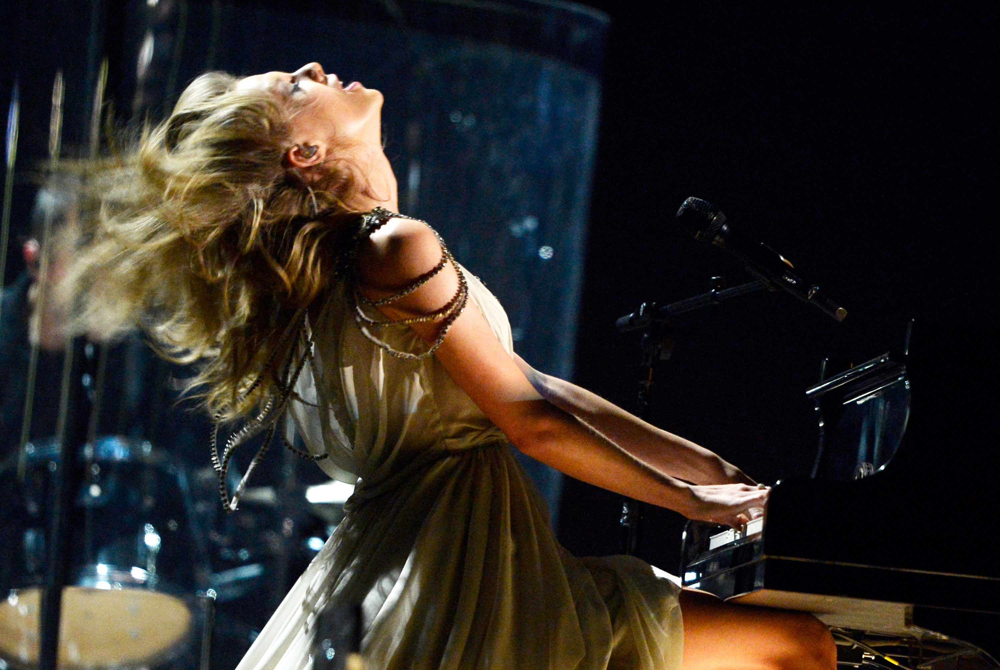

"All Too Well" is a beautifully penned heartbreak anthem reminiscing a love Taylor cherished whole-heartedly, which fans speculate was the brief relationship she had with Brokeback Mountain actor Jake Gyllenhaal back in 2010, 2 years before the song's release.
Taylor Swift and Jake Gyllenhaal happily on a date.
Fans connected the dots after seeing many relations between the actor and singer's relationship with the lyrics written for the popular song. From miniscule details to clear evidence, fans have no doubt that the Donnie Darko star is the main protagonist of the heartfelt song sung from Taylor's point of view.

Taylor giving an emotional performance of the song at the 2014 Grammy Awards.
(link to the performance)
Give the song a listen while you go through the lyrics:
"I walked through the door with you, the air was cold
But something 'bout it felt like home somehow
And I left my scarf there at your sister's house
And you've still got it in your drawer, even now"
In the introduction of the song, Taylor Swift recalls the first time she returned to her lover's home, feeling odd but not out of place. She vividly remembers the item she left behind and how her past lover is also still holding onto it, showing that their parting was not easily forgotten by either of them.
"Oh, your sweet disposition and my wide-eyed gaze
We're singing in the car, getting lost upstate
Autumn leaves falling down like pieces into place
And I can picture it after all these days"
In the first verse, Taylor Swift paints a beautiful picture of how everybody would dream their lives would be with that one special person. This is the start of a relationship-hope is the keyword and everything looks vibrant. Taylor Swift says being with this person made her feel like she was home. She was comfortable and he was warm. It seemed as if all the pieces were falling in perfect fit-like the autumn leaves falling. But little did she know, fall of autumn leaves signify seasonal change where trees hibernate for the winter season. The trees basically die down. Taylor was quite naive and full of love and hope to realize this.
"And I know it's long gone and
That magic's not here no more
And I might be okay, but I'm not fine at all
Oh, oh, oh"
“All Too Well” is a walk down memory lane--a bitter one at that. She looks back at that time where everything looked colorful. The time has passed long since and she is struggling to unstrap herself from the strings.
"'Cause there we are again on that little town street
You almost ran the red 'cause you were lookin' over at me
Wind in my hair, I was there
I remember it all too well"
The chorus of “All Too Well” blurs the line of reality and her imagination. She is obviously reminiscing something from the past, but as she does it becomes her reality. "You almost ran the red ’cause you were looking over at me" This guy was so enchanted with the visual of Taylor Swift, that he almost drove the red light while he was driving. “Wind in my hair” usually refers to freedom or lack of responsibility. So Taylor thinks back to those days when she had little to worry about. The chorus starts off with the present tense “there we are again” and ends in the past tense “I was there, I remember it all too well.” So it is obvious that all this time she was imagining of the past.
"Photo album on the counter, your cheeks were turning red
You used to be a little kid with glasses in a twin-sized bed
And your mother's telling stories 'bout you on the tee-ball team
You tell me 'bout your past, thinking your future was me"
The second verse of “All Too Well” reminisces about the time Taylor Swift visited Jake Gyllenhaal’s her ex-lover's home and met his parents. She remembers checking out the childhood pictures of him wearing specs. Him and his mother chatted up with Taylor Swift telling stories from their childhood thinking the couple would remain close in the future, but unfortunately, that was not the case.
Jake Gyllenhaal's (deleted) Instagram post of his childhood photo which sparked discourse amongst Taylor Swift fans
"And I know it's long gone and
There was nothing else I could do
And I forget about you long enough
To forget why I needed to"
Taylor thinks back to the days and reminds herself that it was a long time ago and it is about time she moved on. But the stronger she tries to forget him, the memories come in flooding as to why she needed him in the first place. It is an internal warfare.
"'Cause there we are again in the middle of the night
We're dancing ‘round the kitchen in the refrigerator light
Down the stairs, I was there
I remember it all too well, yeah"
Taylor Swift is thinking back to the sweet memories they had collected like dancing in the middle of the night in the refrigerator light, something we all wish to experience at least once in our lives. She remembers all of these all too well to just wipe it off her memory. Hence, the struggle.
"Maybe we got lost in translation
Maybe I asked for too much
But maybe this thing was a masterpiece
'Til you tore it all up
Running scared, I was there
I remember it all too well
And you call me up again
Just to break me like a promise
So casually cruel in the name of being honest
I'm a crumpled up piece of paper lying here
'Cause I remember it all, all, all
Too well"
Undoubtedly one of the best bridges ever written, Taylor talks about how she and her lover had two different ideas about their relationship; Taylor wanted something serious and long-lasting and her ex didn't want to commit and ran away, destroying all the good that they had built together. Lost in Translation is a movie from 2000 and portrays a short-lived relationship between two strangers. The similarities in the movie and Taylor’s relationship are too similar to just ignore this reference as random. Taylor Swift once mentioned in a Pop Dust interview that the lyric 'And you call me up again just to break me like a promise, so casually cruel in the name of being honest’ is the lyric she is most proud of on Red. Her fans feel the same way, and they are always singing that line as if they had just gotten stood up on their birthday by the person who they thought were the love of their lives (oops, sorry Taylor).
And finally, Taylor uses the metaphor "crumpled piece of paper" to describe herself post-breakup. A key theme in this song is change. Take a clean sheet of paper, and crumple it up. No matter what you do to that crumpled up piece of paper, you can’t make that sheet into the clean, pure piece of paper that it originally was. Her relationship with her ex-lover was so strong, that once they broke up, she was forever changed.
"Time won't fly, it's like I'm paralyzed by it
I'd like to be my old self again, but I'm still trying to find it
After plaid shirt days and nights when you made me your own
Now you mail back my things and I walk home alone
But you keep my old scarf from that very first week
'Cause it reminds you of innocence and it smells like me
You can't get rid of it
'Cause you remember it all too well, yeah"
My personal favourite verse, the third and final verse of “All Too Well” speaks about recovery. She believes that time is a healer but this time, it isn’t even moving. She is crumpled by a time she is stuck in. The matching shirts, wild and intimate nights, dinners, walks and everything else keeps Taylor from moving on. He mails her the stuff she had kept at his place. He doesn’t even have the spine to deliver them. But he does not return one thing back. That scarf she wore on their very first date. She mentions specifically that it’s from “that very first week,” when their romance, and romance in general, was still fresh and new to them. In a way, the scarf is a symbol of his relationship with Taylor, and his relationship with Taylor is a symbol of his lost innocence. And Taylor knows this because she feels the same way, as we can tell from the line 'I’d like to be my old self again, but I’m still trying to find it'.
"'Cause there we are again when I loved you so
Back before you lost the one real thing you've ever known
It was rare, I was there
I remember it all too well"
Taylor Swift says their relationship was the only real one he has had and he is most likely regretting giving up on it. She was there for him and her type was difficult to come by, and all these memories she remembers all too well to just forget and move on.
"Wind in my hair, you were there
You remember it all
Down the stairs, you were there
You remember it all
It was rare, I was there
I remember it all too well"
The outro of the song shows Taylor Swift is on the fence. She is reeling back to the carefree times she had with the guy and all the memories they accumulated together. With the last three lines, Taylor recalls all the important moments she talked about in the song: her past lover almost running a red light while looking at her hair and dancing around the kitchen downstairs. She’s positive that he remembers these special times. The one difference? He may not have realized how special their sad, beautiful, tragic love affair was, but she sure did. She knows their relationship is over, but she won’t forget it easily.